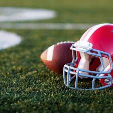
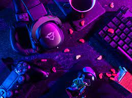

In my opinion, Football is an amazing sport. Some of the reasons are:
Football is a sport that includes many of the aspects of sports that I like.
If you would like to learn more about the sport of Football, click right Here.
Training in the Gym is a way to get my physical form stronger. The experience of the gym is all discipline, and having that discipline is something I like. The experience of the gym with friends is also great, because of the motivation that friends can give you. Training in the gym is something I need to do to get into some of my other hobbies, so I consider that as a Win-Win.
If you would like to know more about the experience of the gym, click right Here.
As a youner person in this society, I enjoy playing video games. I enjoy playing games that include:
Sometimes, other games will pop up when I am bored, but generally, those three games are the games I play the most. I prefer playing these games with friends, because of the team aspect of the game, and plus, I prefer to talk to people opposed to being alone.
If you would like to learn more about gaming, click right Here
I enjoy spending time with my family, because I like to reinforce the familial bond in between us. Without that bond, what are we? We spend time together by:
I enjoy spending time with my family. If you would like to know more about family time, click Here
There are plenty of other things I do to occupy my time. But these four things are the things I enjoy doing the most. Thank you for reading, and have a fantastic day!